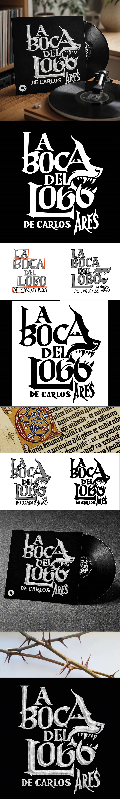

PROCREATE
PHOTOSHOP

Deseño de lettering e dirección de arte
La boca del lobo
Exploración conceptual, estudos compositivos e correccións ópticas para o desenvolvemento e mutación da arquitectura das letras. Esbozado e refinamento realizados en Procreate.
Aplicación dunha resolución en negativo con texturas de desgaste e acabados metalizados para dotar de volume e carácter á portada do vinilo. Dixitalización e acabados realizados en Photoshop.

Deseño de lettering e dirección de arte
La boca del lobo
Exploración conceptual, estudos compositivos e correccións ópticas para o desenvolvemento e mutación da arquitectura das letras. Esbozado e refinamento realizados en Procreate.
Aplicación dunha resolución en negativo con texturas de desgaste e acabados metalizados para dotar de volume e carácter á portada do vinilo. Dixitalización e acabados realizados en Photoshop.
TES ALGÚN PROXECTO EN MENTE?
FALEMOS!
ENVIAR MENSAXESempre é un pracer conectar con novos proxectos e persoas.
La boca del lobo é un proxecto de deseño de lettering e dirección de arte enfocado na creación da portada dun disco de vinilo (LP 12") para o álbum do músico galego Carlos Ares. Consiste en desenvolver unha proposta visual que capture a atmosfera cruda, xélida e bizarra do artista a través dunha reinterpretación contemporánea da caligrafía gótica clásica (estilos Textura e Fraktur). O traballo aborda dende a exploración compositiva e a mutación xeométrica dos glifos —integrando trazos morfolóxicos do lobo como gadoupas e cabeiros de xeito intrínseco nas letras— ata a dixitalización final en negativo, aplicando acabados metalizados e texturas de desgaste para dotar á peza dun carácter visceral e volumétrico.